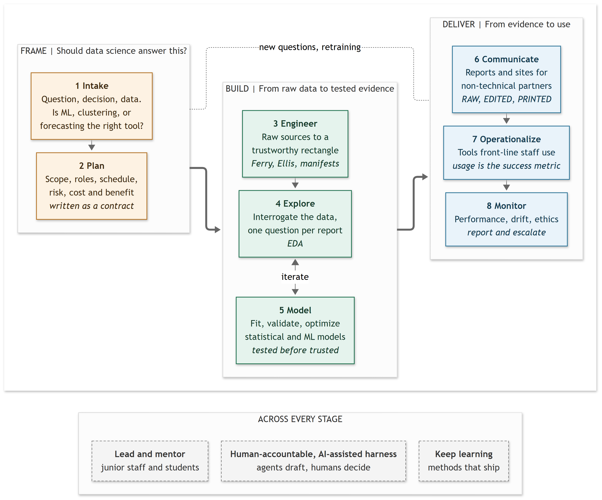

Responsibilities
What You Will Do
Frame the question. I start with the decision someone needs to make, then work back to the evidence. In FIESTA, that meant studying employment-service outcomes, examining bias, and reporting findings that informed funding decisions. A useful answer matters more than an elaborate model.
Build something inspectable. Much of my work sits between a good question and data that can answer it. I’ve built research infrastructure and large preparation pipelines, with documented transformations that colleagues can follow and reuse. That foundation matters whichever modelling stack comes next.
Make it useful. Delivery means more than finishing the analysis. My employment-readiness work supports recurring reports for service staff; survey modernization is shared work with the people who know the process. I’d bring that same attention to how a City team would actually use a solution.
Lead and keep learning. I can lead a study and still need other people’s expertise. I help colleagues build their workflows and develop shared tools, including an agent harness. When a project calls for a different stack, I’d learn it through a small working example, with the team’s expectations for testing and support built in.
The project responsibilities as you describe them overlap with how I think about them, in three phases: frame, build, and deliver.

Specific Response
Project intake: decide whether data science is needed, research possible solutions, and choose a useful direction.
I’d clarify the decision, the available data, and what a useful result would look like before choosing a method. My forecast demo compares ARIMA with a simple seasonal baseline: extra complexity has to earn its place.
Project leadership: align complex projects with organizational goals; plan time, resources, risks, and costs and benefits; coordinate and mentor others.
I led FIESTA from design to reporting and help colleagues develop their tools and workflows. For a City project, I’d agree on milestones, ownership, capacity, risks, and the expected benefit early, then make trade-offs visible as the work develops.
Data analysis: turn large, complex datasets into useful evidence, with the project’s scale, duration, and risks in view.
This is familiar ground. FIESTA brought linkage, weighting, estimation, and bias assessment together around a service question. For FIESTA 2.0, I built the preparation pipeline for more than 8.6 million records; the Office of Statistical Information leads linkage and estimation for that phase.
Model development: build predictive solutions to business problems and implement them using production technologies such as Unix, Docker, databases, and scripting.
My forecasting comparison and LASSO work show model development, not production ML deployment. R, SQL, and reproducible pipelines give me a base to build on. I’d learn the team’s deployment stack by taking a small model through its testing, packaging, and handoff process.
Operationalization: work with service partners on a solution front-line staff can use, and track whether they use it.
The closest example is employment-readiness reporting: I integrated colleagues’ scripts into a repeatable workflow for service staff. I’d work with users on the format and timing, then agree on a usage measure. Recurring delivery is a starting point, not proof of adoption.
Quality assurance: test accuracy and reliability, and check that the solution still serves the organization’s purpose.
I make the checks part of the analysis: linkage bias in FIESTA, missingness and outcome diagnostics, and holdout validation for forecasting. I’d agree on acceptance criteria with the service team so a technically sound result also answers the right question.
Performance monitoring: track and adapt deployed models, examine ethical implications with the Data and Analytics Ethicist, report progress, and escalate concerns.
My survey-reporting work involves verification and reporting alerts, rather than ownership of a deployed-model monitoring system. I’d build from that: agree on performance measures, review intervals, and escalation thresholds; work with the ethicist on uneven effects; and make concerns visible in progress reports.
Model optimization: improve predictive performance as needed while keeping the business goal in view.
I’d check that a change improves the decision, not just a score. The forecast demo shows baseline comparison and prediction intervals, not a live tuning programme. For an operational model, I’d use agreed validation data and weigh any gain against added complexity and maintenance.
Stakeholder communication: explain findings to non-technical partners and senior management so they can act on them.
I’d lead with what the finding changes, how certain it is, and what it doesn’t tell us, with technical detail available behind it. FIESTA’s findings informed funding decisions; my visualization workshops show another way I help people work with evidence.
Continual learning: learn new methods that help deliver useful data-science projects at the City.
I’ve been extending a shared research template into an agent harness, alongside practitioner learning. I want new tools to solve a real problem; a different stack is something to learn for the work, not a reason to force the work into a familiar tool.
Other related duties: contribute to the surrounding work that keeps projects useful.
Documentation, shared tools, and helping colleagues get started are part of delivery too. My onboarding work is one example; I’d make room for that work in the project plan.